электронный ресурс по учебной дисциплине 1-58 01 01 - "Инженерно-психологическое обеспечение информационных технологий"
|
||
| Оглавление | Программа | Теория | Практика | Контроль знаний | Об авторах | ||
| Практика
Лабораторная работа № 16
РЕГИСТРЫ И ИХ ПРИМЕНЕНИЕ
1. ЦЕЛЬ ЛАБОРАТОРНОЙ РАБОТЫ
1.1.Изучение принципов построения регистров; 1.2.Исследование режимов работы и применения регистров.
2. ТЕОРЕТИЧЕСКИЕ СВЕДЕНИЯ
Триггер может хранить (запоминать) один бит цифровой информации (1 или 0).Его также можно назвать одноразрядным регистром. Группа триггеров, предназначенная для хранения двоичной информации (один триггер на каждый бит информации), называется регистром. Регистры находят применение в различных цифровых устройствах, включая микропроцессоры. Данные могут вводиться в регистр (записываться) в последовательной форме (бит за битом) или в параллельной форме (все биты одновременно) и могут выводиться из регистра в последовательной или параллельной форме. Регистры классифицируются в зависимости от того, в какой форме информация вводится в регистр и в какой форме выводится. Существует четыре возможности:
Регистры строятся, используя триггеры (RS, JK, D), и широко представлены как ИС средней степени интеграции.
Регистры, в которые данные вводятся или выводятся в последовательной форме, называются сдвигающими. Биты информации, находящиеся в триггерах регистра, сдвигаются то ли вправо, то ли влево при подаче синхроимпульсов. В некоторых регистрах информация может сдвигаться или вправо, или влево, в зависимости от специального управляющего сигнала. Такие регистры называются реверсивными. Если регистр может работать во всех четырех режимах и также как реверсивный, то такой регистр называется универсальным. Параллельные регистры предназначены для запоминания и хранения двоичной информации, поэтому параллельные регистры называют регистрами хранения или регистрами памяти. Такие регистры осуществляют операции записи и считывания информации параллельным кодом. Параллельные регистры могут использоваться в качестве буферных регистров, а также для преобразования прямого двоичного кода в обратный код и наоборот. При построении параллельных регистров могут использоваться синхронные триггеры со статическим управлением (latch), а также синхронные триггеры с динамическим управлением и двухступенчатые (RS, JK, D) триггеры. На рисунке 1 приведены структуры регистров ИР22 и ИР23. Микросхемы ИР22 и ИР23 – это восьмиразрядные параллельные регистры на D- триггерах. Причем регистр ИР22 построен на D- триггерах со статическим управлением, а ИР23 – с динамическим управлением. 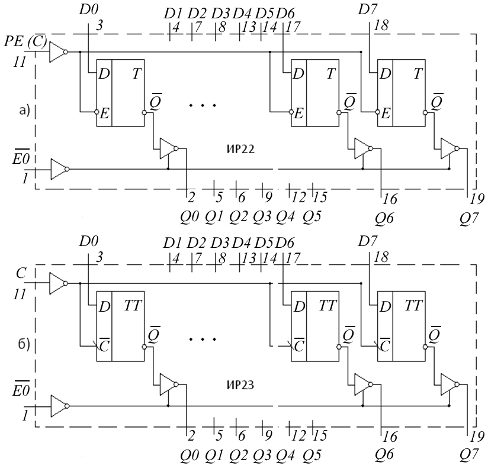
Рис 1 Логическая структура регистров ИР22,ИР23
Регистры ИР22 и ИР23 имеют выходные буферные усилители с тремя состояниями. Третье высокоимпедансное состояние Z можно установить с помощью вывода разрешения 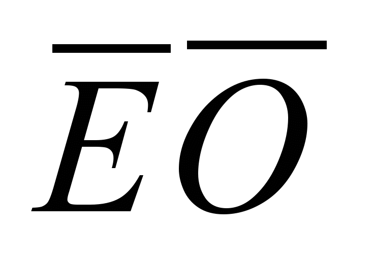 (Enable Output), если подать на него напряжение высокого уровня. Выходные буферные усилители обладают высокой нагрузочной способностью. Регистры состоят из восьми D- триггеров с входами разрешения параллельной записи РЕ (Preset Enable) (для ИР23 – вход С). Если на входе РЕ действует высокий уровень напряжения, то данные от входов D0 – D7 записываются в триггеры регистра. Если на вход подано напряжение низкого уровня, то данные из D- триггеров регистра пройдут на выходы Q0 – Q7. Регистр ИР23 принимает информацию синхронно с положительным перепадом тактового импульса, подаваемого на вход С. В настоящее время выпускается большое количество регистров разнообразного назначения. Однако наиболее универсальными являются регистры, которые могут работать во всех четырех режимах. Примером такого регистра может быть микросхема ИР16. Микросхема ИР16 – это четырехразрядный регистр сдвига с третьим состоянием выхода. Логическая структура регистра показана на рис. 2 . Он построен на четырех синхронных RS- триггерах с инверсным динамическим управлением. RS- триггеры включены по схеме D- триггеров (вход S соединен через инвертор со входом R). На выходах регистра Q0 – Q3 поставлены буферные усилители с повышенной нагрузочной способностью и тремя состояниями. Регистр имеет входы данных D0 – D3 ,вход разрешения параллельной загрузки и сдвига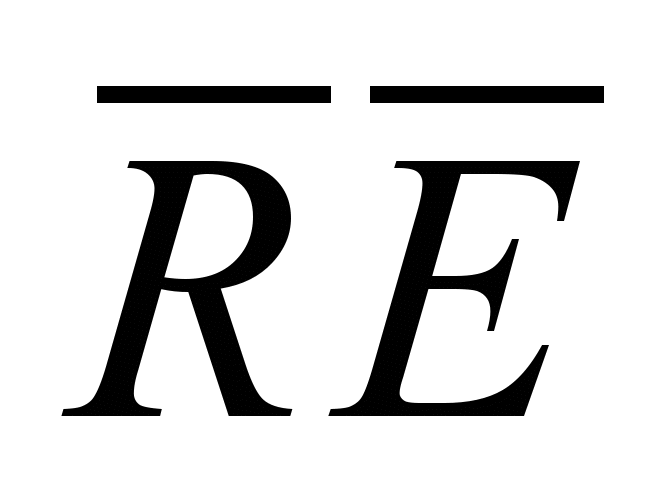, тактовый вход С, вход последовательной загрузки данных S1, вход разрешения выходам ЕО и выходы Q0 – Q3 . Если на вход ,подать напряжения высокого уровня, то данные от входов D0 – D3 параллельно загружаются в регистр синхронно с отрицательным перепадом импульса синхронизации на входе 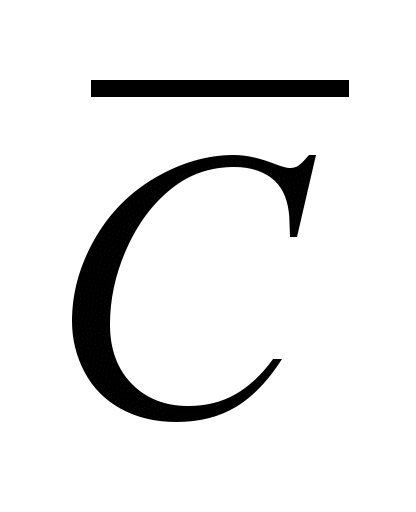. Когда на входе действует напряжение низкого уровня, то загрузка данных в регистр происходит последовательно от входа S1, а сдвиг данных вправо от Q3 к Q0 синхронно с каждым отрицательным перепадом тактового импульса на входе. 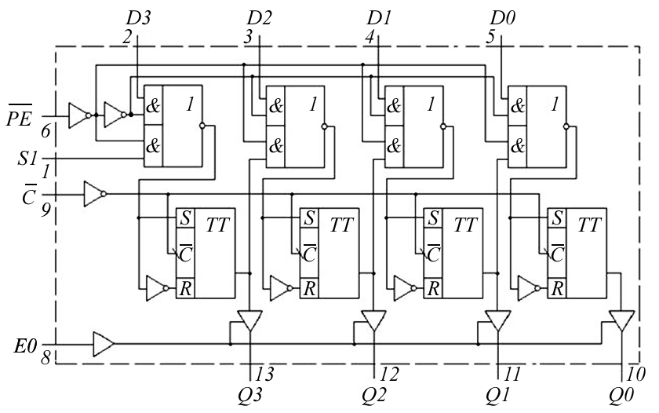
Рис. 2 Логическая структура регистра ИР16
Если на вывод разрешения выходам Е0 подать напряжение низкого уровня, то выходы Q0 – Q3 перейдут в Z-состояние. На рис. 3 показаны условные обозначения и цоколевка ИР22,ИР23 и ИР16. 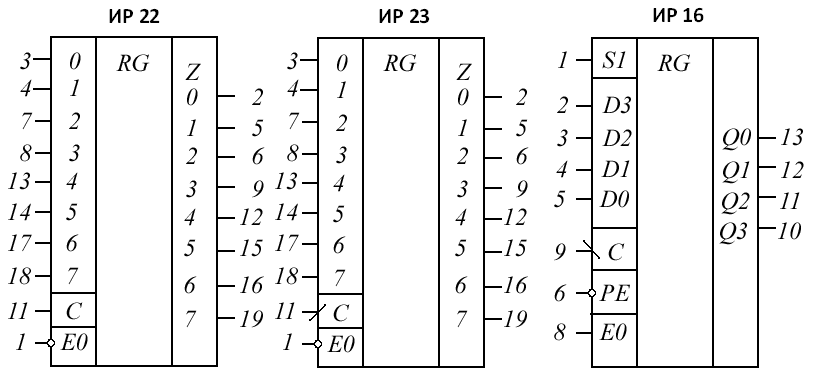 Рис. 3 Условные обозначения и цоколевка ИР22,ИР23 и ИР16
Реверсивные регистры сдвига могут осуществлять сдвиг информации как вправо(SR-Shift Right), так и влево(SL-Shift Left),в зависимости от сигнала на входе управления М. Пример построения реверсивного счетчика показан на рис 4. 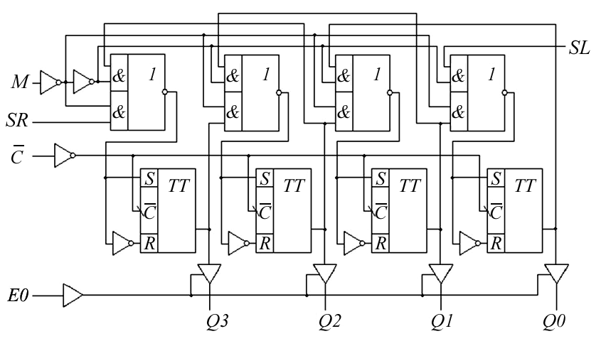 Рис. 4 Логическая структура реверсивного регистра
Если на вход М поступает низкий уровень напряжения, то при подаче тактовых импульсов, информация с входа SR сдвигается вправо. И если на вход М поступает высокий уровень напряжения, то при подаче тактовых импульсов информация с входа SL сдвигается влево. Применение регистров сдвига. Изначально регистры сдвига предназначались для временного хранения данных и некоторых манипуляций с этими данными. Рассмотрим некоторые наиболее общие применения регистров сдвига. Линия задержки. Регистр сдвига с последовательным вводом и последовательным выводом данных можно использовать для задержки цифровых сигналов на время 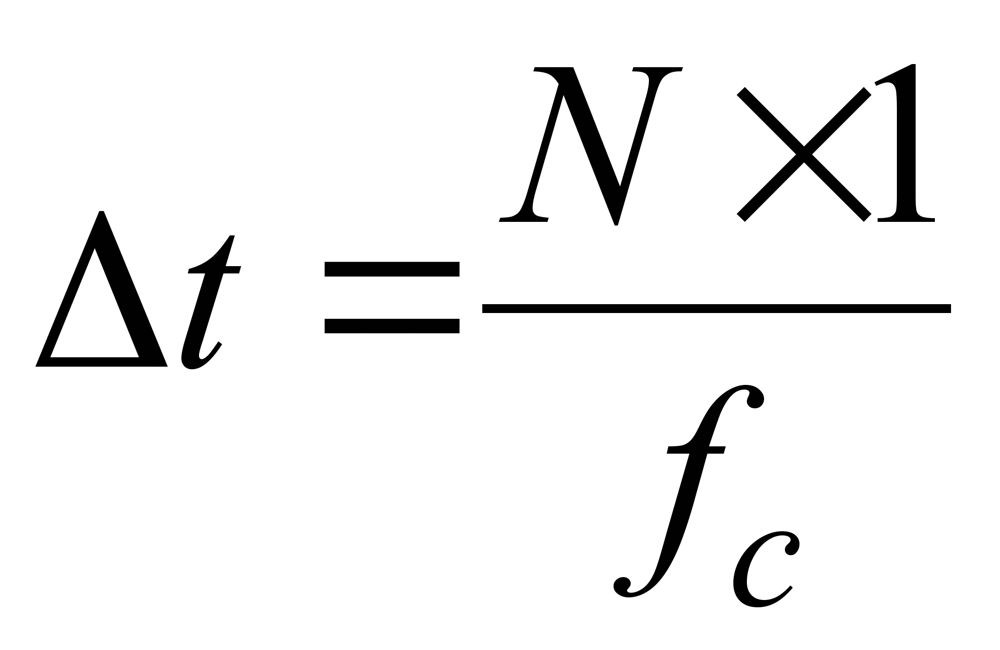, где N - число разрядов регистра сдвига, – частота следования импульсов синхронизации.
Таким образом, цифровой сигнал появляется на выходе регистра сдвига задержанным на время ∆t. Время задержки можно варьировать с помощью изменения частоты следования импульсов синхронизации и числа триггеров регистра сдвига. Преобразователь информации из последовательного вида в параллельный вид. Данные в последовательном виде легко преобразовать в параллельную форму с помощью последовательно – параллельного регистра. Преобразователь информации из параллельного вида в последовательный вид. Данные в параллельном виде легко преобразовать в последовательную форму с помощью параллельно - последовательного регистра. Кольцевой счетчик. Если последовательный выход регистра сдвига Q0 соединить с последовательным входом, то единичный бит, записанный в один из триггеров, будет циркулировать по регистру при подаче синхроимпульсов. Такая схема называется кольцевым счетчиком. На выходах триггеров генерируется неперекрывающиеся последовательности импульсов, которые могут быть полезны для различных приложений. Схема может быть использована для подсчета импульсов. Число сосчитанных импульсов определяется единичным уровнем на выходе соответствующего триггера. Модуль счета такого счетчика равен числу разрядов регистра, mod = N. Эта схема может рассматриваться и как делитель на N (N:1). Счетчик Джонсона. Если выход соединить с последовательным входом, то такая схема называется счетчиком Джонсона. Если в такой схеме, после обнуления регистра, подать импульсы синхронизации, то на выходах триггеров будут генерироваться сигналы формы меандра. Счетчик Джонсона – это делитель на 2N или модуль счета такого счетчика mod = 2N.
Оборудование и компоненты: Программа компьютерного моделирование электронных схем Multisim:Компоненты: ИС КР1533ТМ2 (74АLS74) – два синхронных D- триггера с динамическим управлением, ИС КР1533ЛА3 (74ALS00) – четыре логических элемента 2И-НЕ, ИС КР1533ЛА4 (74ALS10) – три логических элемента 3И-НЕ, ИС КР555ИР16 (74LS295) – четырехразрядный регистр сдвига.
3.1 Собрать схему четырехразрядного регистра сдвига, показанную на рис. 5, используя две ИС КР1533ТМ2 и ИС КР1533ЛА3 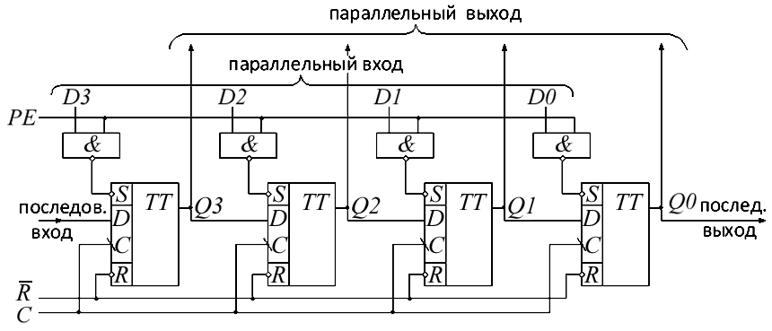 Рис. 5 Четырехразрядный регистр сдвига
3.2 Исследовать функционирование регистра сдвига, рис. 5 . Эта схема может работать во всех четырех режимах. 3.2.1 Последовательный вход, последовательный / параллельный выход. Исследовать работу регистра, подавая на его вход следующее четырехразрядное слово: 1011. Для любого другого слова работа регистра будет аналогична. На вход РЕ подать низкий уровень напряжения, затем обнулить регистр. Для этого на вход 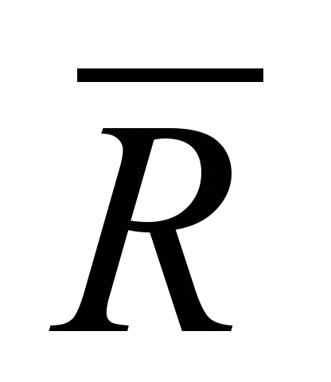подать низкий уровень напряжения, а затем установить = 1. Теперь, подавая импульсы синхронизации (использовать антидребезговую кнопку), проследить, как данные с последовательного входа будут сдвигаться в регистр. Наблюдая за состоянием выходов регистра, убедиться, что данные соответствуют временным диаграммам рис. 6 .
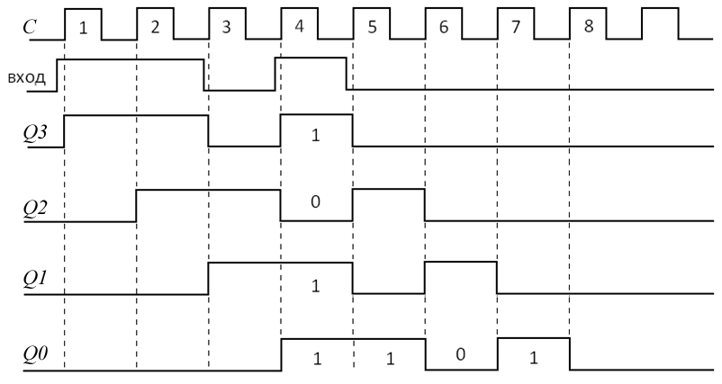
Рис. 6 Временные диаграммы работы регистра: последовательный вход, последовательный / параллельный выход
3.2.2
Параллельный
вход, последовательный / параллельный
выход. Вначале обнулим регистр и
установим R
= 1. Установим входы D3
= 1, D2
= 0, D1
= 1 и D0
= 1, а затем на вход РЕ подадим высокий
уровень напряжения и данные с входов
D3,
D2,
D1,
D0
запишутся в регистр. Теперь данные
доступны в параллельном виде на выходах
триггеров регистра. Подадим на
синхровход регистра импульсы
синхронизации и на выходе Q0
получим выходные данные в последовательном
виде, рис. 7 .
Повторить
п.3.2.1 и п.3.2.2 для входных данных 1101.
Построить временные диаграммы.
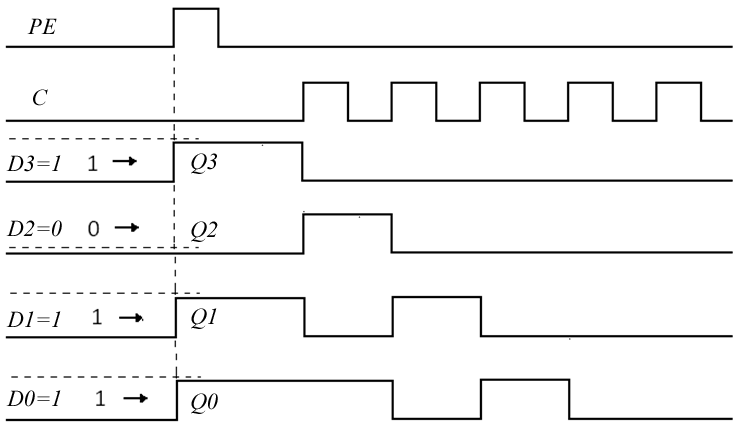
Рис. 7
Временные диаграммы, поясняющие работу
регистра в режиме: последовательный
вход, последовательный / параллельный
выход.
3.3
Исследование кольцевого счетчика.
3.3.1
На основе регистра сдвига рис 5
построить кольцевой счетчик. Для этого
соединить последовательный выход
регистра (выход Q0)
с последовательным входом.
3.3.2
Для
исследования кольцевого счетчика
вначале обнулить регистр, затем
записать в него 0001 в параллельном виде
и подать синхроимпульсы. Результаты
наблюдения табулировать, табл. 1.
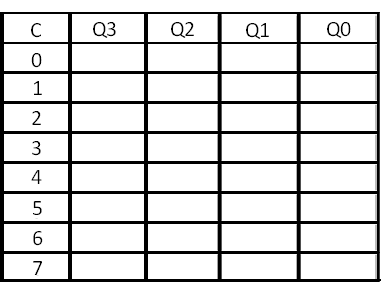 Таблица
1
3.3.3 Построить временные диаграммы работы кольцевого счетчика, сделать выводы.
Исследование
счетчика Джонсона.
4.4.1
На основе регистра сдвига рис. 5
построить счетчик Джонсона. Для
построения счетчика Джонсона необходимо
соединить инверсный выход
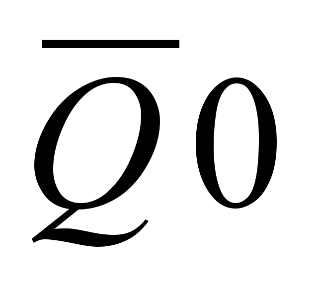
с последовательным входом регистра.
4.4.2 Для
исследования работы счетчика Джонсона
вначале обнулить регистр, а затем
подать синхроимпульсы. Результаты
наблюдений табулировать (табл. 7.1).
4.4.3 Построить
временные диаграммы работы счетчика
Джонсона, сделать выводы.
4. СОДЕРЖАНИЕ ОТЧЕТА
4.1 Цель работы.
4.2 Схемы исследуемых в работе
устройств.
4.3 Таблицы и временные диаграммы,
отражающие результаты исследований.
4.4 Выводы по результатам
исследований.
5. КОНТРОЛЬНЫЕ ВОПРОСЫ
5.1. Объяснить работу регистров
во всех четырех режимах работы.
5.2 . Как строить реверсивный
регистр сдвига?
5.3 . Как строится кольцевой
счетчик?
5.4 . Чему равен модуль счета
кольцевого счетчика?
5.5 . Как строится счетчик Джонсона?
5.6 .Чему равен модуль счета
счетчика Джонсона?
Литература: Будько Цифровые устройства (Минск БГУИР 2010) УДК 004.3*144(076) ББК 32.973.26-04 7
Б90 Практика
|
| (С) БГУИР |